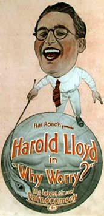

Why Worry
Starring: Harold Lloyd, John Aasen, Jobyna Ralston
Director: Sam Taylor
Writer: Sam Taylor, Ted Wilde
Producer: Hal Roach, Harold Lloyd
Why Worry? is a 1923 American silent comedy film directed by Fred C. Newmeyer and Sam Taylor and starring Harold Lloyd.
Watch Online: Internet Archive
Trivia
- Lloyd and Roach parted on good terms, as each simply wanted to go in different directions and Harold Lloyd now had enough money to finance his films independently.
- In the film's original script, the main character was to go to Mexico instead of the fictitious island of Paradiso.
- Lloyd made the change in response to concerns that using Mexico as the setting perpetuated unfair stereotyping.
Filming Locations
- The village set for the film was used in Roach's Our Gang short Dogs of War, filmed at the same time and featuring guest appearances by Lloyd and Jobyna Ralston.
Previous Showings
4 Runs • 1 Festival
All runs on record (4):
- October 24, 1990w/ Hot Water
- September 8, 1993w/ Hot Water
- February 10, 1995w/ Hot Water
- July 3, 2002Summer 2002: Billy Wilder Remembered and Cary Grant, Part 3w/ Safety Last